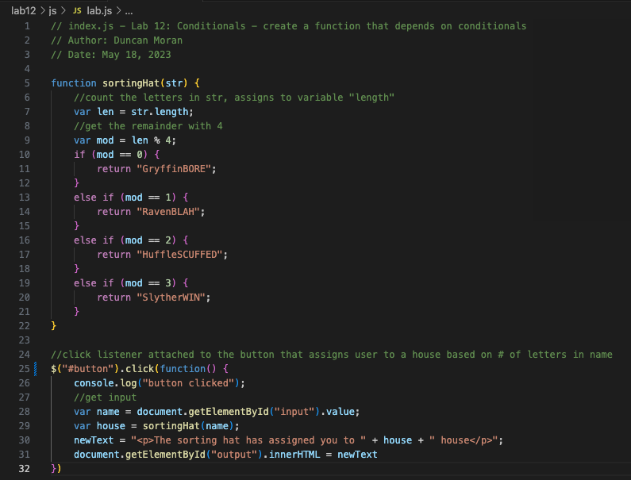
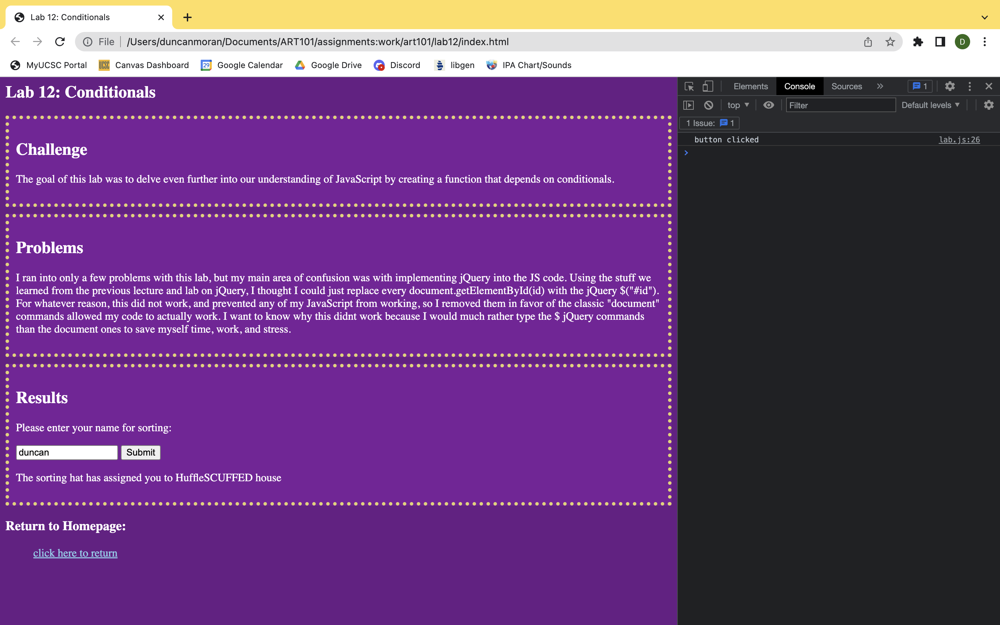

Lab 12: Debugging Tools & Strategies
Challenge
The challenge of this lab is to use our debugging knowledge to fix old assignments.
Problems
Really didnt run into any issues with this lab. I only had 1 lab that had us using JavaScript that I was confused with/had code that didnt work correctly, and it was an easy fix. I also got 10/10 on the lab, so I dont feel a resubmission is necessary.
Results
The results of this lab is in the following section which features a debugged previous lab:
Debugging
The lab I debugged was lab 12: Conditionals. This code worked fine before the debug, but the debug was just replacing all the pure JavaScript DOM manipulation with jQuery. I attemped this in lab12, however my code didnt work as I was mixing pure JS with jQuery, which I didnt know would result in my code not working. I ran into a similar issue in lab13, but was learned that pure JS and jQuery DOM manipulation wont mix. So, I borrowed my jQuery from lab13 and used it in lab12 (as they both utilize an event listener that listens for a click). The resulting lab12 code, seen below, does the same thing, but has fewer lines of code.
And here is the new working output (console open to show debug indicator command I made to show me the click was heard):
